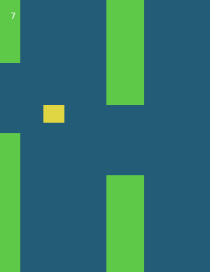
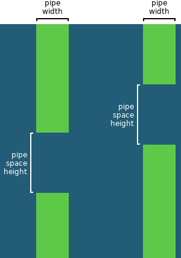
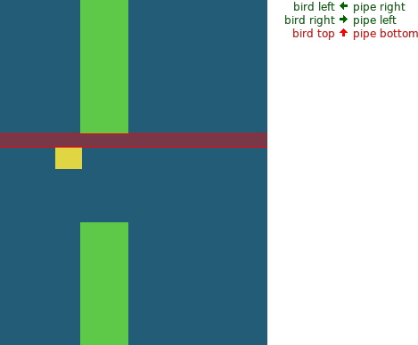
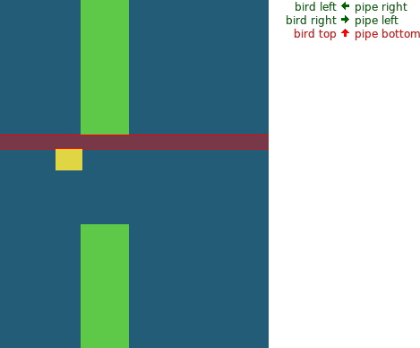

Bird
A tutorial for Lua and LÖVE 11
Please send any feedback to simple.game.tutorials@gmail.com
Rules
Fly through the spaces between the pipes by flapping.
A point is scored for every pipe passed.
Controls
| Any key | Flap |
Overview
The bird doesn't actually move forward; it stays still on the X axis while the pipes move to the left.
The bird is drawn as a yellow rectangle, and each pipe is drawn as two green rectangles.
The bird's Y position moves down by a certain speed each frame. Each frame this speed is increased to simulate gravity.
When a key is pressed, the bird's speed is set to a high number in the upward direction.
The pipes share the same width, and the same space height between the segments.
Each pipe has its own X position, and Y position the space starts at.

Since there are only two pipes in the playing area at one time, the information for only two pipes needs to stored. Once a pipe goes out of the playing area, it gets a new space position and its X position is reset to the right edge of the playing area.
To see if the bird has collided with a pipe's two segments, three things need to be checked for each segment.
The bird has collided with the top segment if...
- The left edge of the bird is to the left of the right edge of the pipe, and...
- The right edge of the bird is to the right of the left edge of the pipe, and...
- The top edge of the bird is above the bottom edge of the pipe segment

 


The bird has collided with the bottom segment if...
- The left edge of the bird is to the left of the right edge of the pipe, and...
- The right edge of the bird is to the right of the left edge of the pipe, and...
- The bottom edge of the bird is below the top edge of the pipe segment
Coding
Drawing the background
A blue rectangle is drawn for the background.
function love.draw() love.graphics.setColor(.14, .36, .46) love.graphics.rectangle('fill', 0, 0, 300, 388) end

Drawing the bird
A yellow rectangle is drawn for the bird.
function love.draw() -- etc. love.graphics.setColor(.87, .84, .27) love.graphics.rectangle('fill', 62, 200, 30, 25) end

Moving the bird
The bird's Y position is made into a variable, and every frame it increases by 30 multiplied by dt, making the bird move down 30 pixels per second.
function love.load() birdY = 200 end function love.update(dt) birdY = birdY + (30 * dt) end function love.draw() -- etc. love.graphics.setColor(.87, .84, .27) love.graphics.rectangle('fill', 62, birdY, 30, 25) end

Gravity
Instead of moving at a constant speed, the number added to the bird's Y position also increases over time.
The bird's speed is made into a variable which starts at 0, and every frame it increases by 516 multiplied by dt.
function love.load() birdY = 200 birdYSpeed = 0 end function love.update(dt) birdYSpeed = birdYSpeed + (516 * dt) birdY = birdY + (birdYSpeed * dt) end
Flapping
Pressing any key sets the bird's speed to a negative number so that it moves upwards.
function love.keypressed(key) birdYSpeed = -165 end
Preventing flapping when above the playing area
So that the bird can't fly completely above the playing area, flapping is only possible if the top edge of the bird is not above the playing area.
function love.keypressed(key) if birdY > 0 then birdYSpeed = -165 end end
Drawing a pipe
For now, a solid rectangle is drawn for the pipe, with its left edge touching the playing area's right edge.
The width and height of the playing area are reused from drawing the background, so they are made into variables.
function love.load() -- etc. playingAreaWidth = 300 playingAreaHeight = 388 end function love.draw() love.graphics.setColor(.14, .36, .46) love.graphics.rectangle('fill', 0, 0, playingAreaWidth, playingAreaHeight) -- etc. love.graphics.setColor(.37, .82, .28) love.graphics.rectangle('fill', playingAreaWidth, 0, 54, playingAreaHeight) end

Drawing two pipe segments
Instead of drawing one rectangle, two rectangles are drawn for the upper and lower segments.
The top rectangle's height is set to where the space between the two segments starts. For now, this is 150.
The bottom rectangle starts at the Y position of the top rectangle's height plus the amount of space between them (which is 100).
The bottom rectangle's height is the playing area's height, minus the height of the top rectangle and the space.
The pipe width is the same for both segments, so it is made into a variable.
function love.draw() -- etc. local pipeWidth = 54 local pipeSpaceHeight = 100 local pipeSpaceY = 150 love.graphics.setColor(.37, .82, .28) love.graphics.rectangle( 'fill', playingAreaWidth, 0, pipeWidth, pipeSpaceY ) love.graphics.rectangle( 'fill', playingAreaWidth, pipeSpaceY + pipeSpaceHeight, pipeWidth, playingAreaHeight - pipeSpaceY - pipeSpaceHeight ) end

Randomizing the space position
The pipe's space position is set to a random number between 0 (the top of the playing area) and the playing area height minus the space height (so that the bottom of the space would be touching the bottom of the playing area).
The pipe's space position should be set only once, so it is moved into love.load. Setting the pipe's space position requires the space's height, so it is also moved into love.load.
To test this, pressing any key calls love.load to create a new random space position.
function love.load() -- etc. pipeSpaceHeight = 100 pipeSpaceY = love.math.random(0, playingAreaHeight - pipeSpaceHeight) end function love.keypressed(key) -- etc. -- Temporary love.load() end function love.draw() -- Moved: local pipeSpaceY = 150 -- Moved: local pipeSpaceHeight = 100 end

The space's minimum distance from top/bottom
So that there is some distance between the top/bottom of the playing area and the space, a minimum number is added/subtracted from the random minimum/maximum values.
function love.load() -- etc. local pipeSpaceYMin = 54 pipeSpaceY = love.math.random( pipeSpaceYMin, playingAreaHeight - pipeSpaceHeight - pipeSpaceYMin ) end
Moving the pipe
The pipe's X position is made into a variable, and is moved left 60 pixels per second.
function love.load() -- etc. pipeX = playingAreaWidth end function love.update(dt) -- etc. pipeX = pipeX - (60 * dt) end function love.draw() -- etc. love.graphics.rectangle( 'fill', pipeX, 0, pipeWidth, pipeSpaceY ) love.graphics.rectangle( 'fill', pipeX, pipeSpaceY + pipeSpaceHeight, pipeWidth, playingAreaHeight - pipeSpaceY - pipeSpaceHeight ) end

Resetting the pipe
When the pipe goes out of the playing area, its X position is reset and it gets a new random space position.
Determining if the pipe has gone out of the playing area requires knowing the pipe's width, which is reused from drawing the pipe, so the pipe's width is moved into love.load.
Setting the initial X position of the pipe and its random space position is reused from love.load, so a function is made.
function love.load() birdY = 200 birdYSpeed = 0 playingAreaWidth = 300 playingAreaHeight = 388 pipeSpaceHeight = 100 pipeWidth = 54 function resetPipe() local pipeSpaceYMin = 54 pipeSpaceY = love.math.random( pipeSpaceYMin, playingAreaHeight - pipeSpaceHeight - pipeSpaceYMin ) pipeX = playingAreaWidth end resetPipe() end function love.update(dt) -- etc. if (pipeX + pipeWidth) < 0 then resetPipe() end end function love.draw() -- Moved: local pipeWidth = 54 end
Colliding with the top pipe segment
The bird is colliding with the top pipe segment if...
- the left edge of the bird is to the left of the right edge of the pipe (i.e. the bird is not completely past the pipe on the right side), and...
- the right edge of the bird is to the left of the pipe (i.e. the bird is not completely to the left of the pipe), and...
- the top edge of the bird is above the bottom edge of the pipe segment (i.e. the bird is not completely below the pipe segment)
For now, love.load is called to reset the game when the bird and pipe collide.
The bird's X position and width are reused from drawing the bird, so they are made into variables.
function love.load() -- etc. birdX = 62 birdWidth = 30 end function love.update(dt) -- etc. if -- Left edge of bird is to the left of the right edge of pipe birdX < (pipeX + pipeWidth) and -- Right edge of bird is to the right of the left edge of pipe (birdX + birdWidth) > pipeX and -- Top edge of bird is above the bottom edge of first pipe segment birdY < pipeSpaceY then love.load() end end function love.draw() -- etc. love.graphics.setColor(.87, .84, .27) love.graphics.rectangle('fill', birdX, birdY, birdWidth, 25) -- etc. end
Colliding with the bottom pipe segment
The bird is colliding with the bottom pipe segment if...
- the bird is overlapping the pipe on the X axis (as checked for with the top pipe segment), and...
- the bottom edge of the bird is above the top edge of the pipe segment (i.e. the bird is not completely above the pipe segment)
The bird's height is reused from drawing the bird, so it is made into a variable.
function love.load() -- etc. birdHeight = 25 end function love.update(dt) -- etc. if -- Left edge of bird is to the left of the right edge of pipe birdX < (pipeX + pipeWidth) and -- Right edge of bird is to the right of the left edge of pipe (birdX + birdWidth) > pipeX and ( -- Top edge of bird is above the bottom edge of first pipe segment birdY < pipeSpaceY or -- Bottom edge of bird is below the top edge of second pipe segment (birdY + birdHeight) > (pipeSpaceY + pipeSpaceHeight) ) then love.load() end end function love.draw() -- etc. love.graphics.setColor(.87, .84, .27) love.graphics.rectangle('fill', birdX, birdY, birdWidth, birdHeight) -- etc. end
Drawing two pipes
Each pipe has its own X position and space position.
For now, these are manually set for each pipe.
The pipe drawing code is turned into a function which takes a pipe's X position and space position.
function love.load() -- etc. pipe1X = 100 pipe1SpaceY = 100 pipe2X = 200 pipe2SpaceY = 200 end function love.draw() -- etc. local function drawPipe(pipeX, pipeSpaceY) love.graphics.setColor(.37, .82, .28) love.graphics.rectangle( 'fill', pipeX, 0, pipeWidth, pipeSpaceY ) love.graphics.rectangle( 'fill', pipeX, pipeSpaceY + pipeSpaceHeight, pipeWidth, playingAreaHeight - pipeSpaceY - pipeSpaceHeight ) end drawPipe(pipe1X, pipe1SpaceY) drawPipe(pipe2X, pipe2SpaceY) end
Randomizing space position for two pipes
Because each pipe has an individual X position, setting the X position is removed from the resetPipe function, leaving only the random space position. The function is renamed to newPipeSpaceY to reflect this.
Instead of creating a global pipeSpaceY variable, the function returns a new space position.
Because the variables pipeX, pipeSpaceY and resetPipe no longer exist, the parts of love.update which use them are commented out.
To test the random space positions, the pipes get new space positions when a key is pressed.
function love.load() -- etc. function newPipeSpaceY() local pipeSpaceYMin = 54 local pipeSpaceY = love.math.random( pipeSpaceYMin, playingAreaHeight - pipeSpaceHeight - pipeSpaceYMin ) -- Removed: pipeX = playingAreaWidth return pipeSpaceY end -- Removed: resetPipe() pipe1X = 100 pipe1SpaceY = newPipeSpaceY() pipe2X = 200 pipe2SpaceY = newPipeSpaceY() end function love.update(dt) birdYSpeed = birdYSpeed + (516 * dt) birdY = birdY + (birdYSpeed * dt) --[[ pipeX = pipeX - (60 * dt) if (pipeX + pipeWidth) < 0 then resetPipe() end if -- Left edge of bird is to the left of the right edge of pipe birdX < (pipeX + pipeWidth) and -- Right edge of bird is to the right of the left edge of pipe (birdX + birdWidth) > pipeX and ( -- Top edge of bird is above the bottom edge of first pipe segment birdY < pipeSpaceY or -- Bottom edge of bird is below the top edge of second pipe segment (birdY + birdHeight) > (pipeSpaceY + pipeSpaceHeight) ) then love.load() end --]] end function love.keypressed(key) -- etc. -- Temporary pipe1SpaceY = newPipeSpaceY() pipe2SpaceY = newPipeSpaceY() end

Moving two pipes
The code which moves the pipe is uncommented and turned into a function which takes a pipe's X position and space position, and returns the updated positions.
When a pipe moves out of the playing area, its position is set to be at the right of the playing area.
function love.update(dt) -- etc. local function movePipe(pipeX, pipeSpaceY) pipeX = pipeX - (60 * dt) if (pipeX + pipeWidth) < 0 then pipeX = playingAreaWidth pipeSpaceY = newPipeSpaceY() end return pipeX, pipeSpaceY end pipe1X, pipe1SpaceY = movePipe(pipe1X, pipe1SpaceY) pipe2X, pipe2SpaceY = movePipe(pipe2X, pipe2SpaceY) --[[ if -- Left edge of bird is to the left of the right edge of pipe birdX < (pipeX + pipeWidth) and -- Right edge of bird is to the right of the left edge of pipe (birdX + birdWidth) > pipeX and ( -- Top edge of bird is above the bottom edge of first pipe segment birdY < pipeSpaceY or -- Bottom edge of bird is below the top edge of second pipe segment (birdY + birdHeight) > (pipeSpaceY + pipeSpaceHeight) ) then love.load() end --]] end

Initial X position for pipes
The first pipe's initial X position is set to the width of the playing area (i.e. the pipe's left edge is touching the right edge of the playing area).
The second pipe's initial X position is set so that there is an even space between it and the other pipe on either side.
The total distance that a pipe travels from the of the right of the playing area to left is the width of the playing area plus the width of the pipe.
The second pipe's initial X position is set to the playing area width plus half the total distance, so that the two pipes are spaced evenly apart.
function love.load() -- etc. pipe1X = playingAreaWidth pipe1SpaceY = newPipeSpaceY() pipe2X = playingAreaWidth + ((playingAreaWidth + pipeWidth) / 2) pipe2SpaceY = newPipeSpaceY() end

Bird colliding with pipe
The code for the checking if the bird and pipe have collided is uncommented and turned into a function which takes a pipe's X position and space position and returns a boolean value.
The function is called for both pipes.
function love.update(dt) -- etc. function isBirdCollidingWithPipe(pipeX, pipeSpaceY) return -- Left edge of bird is to the left of the right edge of pipe birdX < (pipeX + pipeWidth) and -- Right edge of bird is to the right of the left edge of pipe (birdX + birdWidth) > pipeX and ( -- Top edge of bird is above the bottom edge of first pipe segment birdY < pipeSpaceY or -- Bottom edge of bird is below the top edge of second pipe segment (birdY + birdHeight) > (pipeSpaceY + pipeSpaceHeight) ) end if isBirdCollidingWithPipe(pipe1X, pipe1SpaceY) or isBirdCollidingWithPipe(pipe2X, pipe2SpaceY) then love.load() end end
Bird falling out of the playing area
The game is also reset if the bird has fallen out of the playing area (i.e. the bird's top edge is below the bottom edge of the playing area).
function love.update(dt) -- etc. if isBirdCollidingWithPipe(pipe1X, pipe1SpaceY) or isBirdCollidingWithPipe(pipe2X, pipe2SpaceY) or birdY > playingAreaHeight then love.load() end end
Drawing the score
The score is initially set to 0 and is drawn.
function love.load() -- etc. score = 0 end function love.draw() -- etc. love.graphics.setColor(1, 1, 1) love.graphics.print(score, 15, 15) end
Updating the score after passing the first pipe
If the bird's left edge is to the right of the pipe's right edge, then 1 is added to the score.
Currently, this happens every frame instead of just once, so the score will increase too much, and only the first pipe is checked.
function love.update(dt) -- etc. if birdX > (pipe1X + pipeWidth) then score = score + 1 end end
Updating the score once for both pipes
A number representing which pipe is upcoming is stored in a variable and the bird is checked to see if it has passed a pipe only when that particular pipe is the upcoming pipe.
When it has passed it, the upcoming pipe is set to the other pipe.
function love.load() -- etc. upcomingPipe = 1 end function love.update(dt) -- etc. if upcomingPipe == 1 and (birdX > (pipe1X + pipeWidth)) then score = score + 1 upcomingPipe = 2 end if upcomingPipe == 2 and (birdX > (pipe2X + pipeWidth)) then score = score + 1 upcomingPipe = 1 end end
Simplifying code
The only differences between updating the score for the first and second pipes are the currently upcoming pipe, the pipe's X position, and the next upcoming pipe.
A function is made with these values as parameters.
function love.update(dt) -- etc. local function updateScoreAndClosestPipe(thisPipe, pipeX, otherPipe) if upcomingPipe == thisPipe and (birdX > (pipeX + pipeWidth)) then score = score + 1 upcomingPipe = otherPipe end end updateScoreAndClosestPipe(1, pipe1X, 2) updateScoreAndClosestPipe(2, pipe2X, 1) end
Resetting on game over
When the game is over only some variables need to be reset, so a function is made.
function love.load() playingAreaWidth = 300 playingAreaHeight = 388 birdX = 62 birdWidth = 30 birdHeight = 25 pipeSpaceHeight = 100 pipeWidth = 54 function newPipeSpaceY() local pipeSpaceYMin = 54 local pipeSpaceY = love.math.random( pipeSpaceYMin, playingAreaHeight - pipeSpaceHeight - pipeSpaceYMin ) return pipeSpaceY end function reset() birdY = 200 birdYSpeed = 0 pipe1X = playingAreaWidth pipe1SpaceY = newPipeSpaceY() pipe2X = playingAreaWidth + ((playingAreaWidth + pipeWidth) / 2) pipe2SpaceY = newPipeSpaceY() score = 0 upcomingPipe = 1 end reset() end function love.update(dt) -- etc. if isBirdCollidingWithPipe(pipe1X, pipe1SpaceY) or isBirdCollidingWithPipe(pipe2X, pipe2SpaceY) or birdY > playingAreaHeight then reset() end -- etc. end